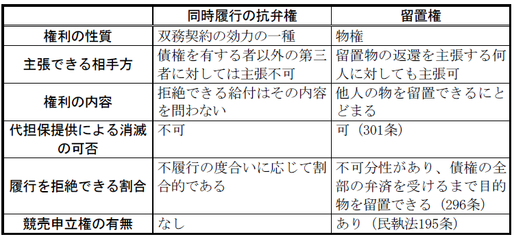
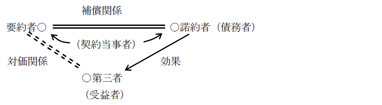

第５編 契約総論
第１章 総説
第１節 契約の意義等
：相対立する複数の意思表示の合致によって成立する法律行為
広義には、物権の設定や身分関係の発生を目的とする合意も含む。
狭義には債権の発生を目的とする合意を指す。
契約自由の原則は、私的自治の原則の派生原理として、民法の指導原理の１つである。
契約自由の原則の内容は、①契約締結の自由、②相手方選択の自由、③内容決定の自由、④方式の自由に分けられる。
1. 契約締結の自由
原則として、契約するかしないかは、個人の自由であるが、経済的弱者保護のため、以下のような制限がある。
① 公共的性質を有する企業ないし業務については、事業者に承諾義務が課せられている（電気、ガス、運送等）。
② 経済的弱者を保護するために、当事者の一方からの請求があれば、相手方に正当事由がない限り、承諾をしたものとみなされる場合がある（建物買取請求権等）。
2. 相手方選択の自由とは、契約の相手方を選択する自由をいう。
3. 契約の内容決定の自由とは、当事者は、強行法規又は公序良俗に反しない限り、契約の内容を自由に決定することができることをいう。
ただし、現実には既に出来上がった契約条件をそのまま受け入れるという形で締結されることも多い。このような契約を付合契約といい、そこで使われるあらかじめ作成された契約条項を約款ないし普通契約条項という。
4. 契約の方式の自由とは、契約の申込及び承諾には、何らの形式を必要としないことをいう。
もっとも、一定の形式が要求される場合がある。
1. 典型契約・非典型契約
(1) 典型契約（有名契約）とは、民法に定める13種類の契約をいう。
すなわち、贈与、売買、交換、消費貸借、使用貸借、賃貸借、雇用、請負、委任、寄託、組合、終身定期金、和解である。
(2) 非典型契約（無名契約）とは、典型契約以外の契約をいう。
2. 双務契約・片務契約
(1) 双務契約とは、契約当事者が互いに対価的意義を有する債務を負担する契約をいう。
ex．売買、交換、賃貸借、雇用、請負、有償委任、有償寄託、組合、和解
(2) 片務契約とは、一方の当事者のみが債務を負う契約、又は双方の当事者が債務を負担するが、それが対価的意義を有しない契約をいう。
ex．贈与、要物的消費貸借、使用貸借、無償委任、無償寄託
(3) 区別の実益
同時履行の抗弁権（533条）、危険負担（536）の規定は、双務契約にのみ適用される。
3. 有償契約・無償契約
(1) 有償契約とは、双方の当事者が対価的意義を有する財産上の出捐（経済的損失）をする契約をいう。
ex．売買、交換、賃貸借、利息付消費貸借、雇用、請負
(2) 無償契約とは、当事者の一方だけが給付をするにとどまる契約、又は双方が給付をしてもその間に対価的意義のない契約をいう。
ex．贈与、無利息消費貸借、使用貸借
(3) 区別の実益
有償契約については、その契約の性質が許さないときを除き、売買に関する規定が準用される（559条）。
4. 諾成契約・要物契約
(1) 諾成契約とは、当事者の意思表示の合致、すなわち、合意だけで成立する契約をいう。
ex．売買、交換、賃貸借、雇用、請負、委任、諾成的消費貸借、使用貸借
(2) 要物契約とは、当事者の合意のほかに、物の引渡しその他の給付がなければ成立しない契約をいう。
ex．要物的消費貸借
要物契約を特約により諾成契約とすることは、契約自由の原則から差し支えない。
(3) 区別の実益
契約成立の時期について差異を生じる。
5. 一時的契約・継続的契約・継続的供給契約
(1) 一時的契約（単発的契約）とは、１回の履行で契約関係が終了する契約をいう。
ex．通常の売買
(2) 継続的契約とは、契約に存続期間を観念でき、その間履行が繰り返される契約をいう。
ex．賃貸借、雇用、消費貸借、寄託
(3) 継続的供給契約とは、一定の期間、種類で定められた物を一定の代金で供給する契約をいい、これは売買の一種であるが、性質は継続的契約である。
ex．新聞、電気、ガス等の供給契約
1. 意義
：契約成立の際の基礎となった事情や環境がその後著しく変わったために、当初定められた契約の内容をそのまま維持し強制することが信義に反し不当な結果を生じる場合に、契約の内容を信義公平に合うように改訂したり、失効させたりすることを認めること
2. 趣旨
契約は守られなければならないのが原則である。しかし、契約当時全く予見できなかった社会的事情の変動が生じてしまった場合、当事者に契約上の債務の履行を強制することはかえって正義公平に反する。そこで、信義則上契約を改訂したり失効させたりすることを認めた。
3. 要件
①当事者の予見しなかった、又は予見できなかった著しい基礎事情の変更が生じたこと、②基礎事情の変更が当事者の責めに帰することができない事由によって生じたこと、③契約内容を維持強制することが著しく正義公平の観念に反すること、が必要である。
4. 効果
(1) 契約内容の改訂権
(2) 契約の解除権
契約内容の改訂権の主張が可能な場合には、まず契約の改訂の主張をするべきで、これをせずに直ちに契約の解除を主張することはできない（通説）。
第２節 契約の成立
契約は、通常は申込みと承諾という形式で成立する(522条)。
すなわち、ＡがＢに対して「甲建物を2000万円で買ってくれないか」といい、ＢがＡに対して「甲建物を2000万円で買う」と返事すれば、ＡＢ間に甲建物の売買契約が成立することになる（522条１項）。
1. 申込み
(1) 意義
：これに応ずる承諾と合致して一定の契約を成立させることを目的とする、一方的な意思表示
(2) 申込みの効力
(a) 効力発生時期
ⅰ 特定人に対する申込みは相手方に到達したときから効力を生ずる（97条１項）。
ⅱ 不特定人に対する申込みは不特定人に了知することができる状態に達したときから効力を生ずる。
※ なお、必ずしも書面等により、明示的にされることは要しない（522条２項）。
(b) 申込みの拘束力
ⅰ 承諾の期間を定めてした申込みは、撤回することができない（523条１項本文）。
ⅱ 承諾の期間を定めないでした申込みは、申込者が承諾の通知を受けるのに相当な期間を経過するまでは撤回することができない（525条１項本文）。
ⅲ ⅰ及びⅱのいずれの申込みであっても、申込者が撤回をする権利を留保したときは、撤回が可能である（523条１項ただし書、525条１項ただし書）。
ⅳ 対話者間における承諾期間の定めのない申込みは上記ⅱにかかわらず、対話が継続している間はいつでも撤回することができる（525条２項）。また525条３項により、対話者関係終了の場合の規律が定められている。
※ 申込みの撤回
契約の成否は、承諾の到達と申込みの撤回の到達の客観的な先後で決まることになる。承諾者は、その先後関係を知ることができないから、申込みの撤回の通知の延着があっても対応を求めることができない。
(c) 申込者の死亡・意思能力喪失・行為能力の喪失
一般原則では、意思表示後に表意者が死亡したり、意思能力を喪失した常況にある者となったり、行為能力の制限を受けたりしたとしても、意思表示の効力に影響しない（97条３項)とされる。
しかし、申込みの場合には例外として、申込者がその事実が生じたとすればその申込みは効力を有しない旨の意思を表示していたとき、又はその相手方が承諾の通知を発するまでにその事実が生じたことを知ったときは、その申込みは、その効力を有しない（526条）。
2. 承諾
(1) 承諾の意義
承諾は、必ずしも書面等により、明示的にされることは要しない（522条２項）。また、申込者に対する通知によってされるのを原則とするが、承諾の意思表示と認められるべき事実（意思実現）があれば、契約は成立する（527条）。
(2) 承諾はいつまでにすべきか
(a) 承諾期間の定めのある申込みに対する承諾は、その期間内に限りすることができ、しかもその承諾は期間内に到達しなければならない（523条２項）。
もっとも、遅延した承諾は申込者において新たな申込みとみなすことができる（524条）。
(b) 承諾期間の定めのない申込みに対する承諾は、取引慣行と信義則に従い、相当期間が経過するまでにしなければならない。
契約は債権関係という統一的な効果を生じさせる法律要件であるから、それを構成する法律事実が完全に具備した時に成立する。
1. 通常の契約
(1) 諾成契約
通常は承諾の効力発生時期である。
(2) 要物契約
意思表示の効力が発生し、かつ物の引渡しその他の法律事実が具備された時である。
2. 承諾の通知を必要としない場合
申込者の意思表示又は取引上の慣習により承諾の通知を必要としない場合には、契約は、承諾の意思表示と認めるべき事実があった時に成立する（527条）。
第３節 契約の効力
Ⅰ 一般的効力
1. 当事者
当事者に関しては、自然人につき、その意思能力及び行為能力の存在、法人については、権利能力及び行為能力の範囲内であること、代理人による場合には、代理権の範囲内であることを要する。
2. 契約の内容
契約の内容に関しては、それが可能であり、確定できるものであり、かつ、適法であって社会的妥当性のあることを要する。
契約より生じる以下の一般的効力により、債権者は債務者が債務を履行しない場合に様々な手段を採ることができる。
1. 現実的履行の強制
債務者が債務を履行しない場合、債権者は、国家的権力を使って債務の内容を強制的に実現することができる。
2. 損害賠償の請求
3. 契約の解除
Ⅱ 双務契約の効力
双務契約においては、双方の債務が互いに対価的な意義を有する。そのため、双方の債務は特別な関係にあるということができる。このことを、牽連関係又は牽連性という。
1. 成立上の牽連関係
双務契約の一方の債務が不能・不法などの理由で成立しないとき、若しくは錯誤又は制限行為能力や詐欺・強迫を理由に取り消されたときには、他方の債務もまた成立しない。
2. 履行上の牽連関係
双務契約の各債務は、原則として一方の債務が履行されるまでは他方の債務も履行されなくてもよい。民法は、同時履行の抗弁権（533条）としてこれを規定している。
3. 存続上の牽連関係
双務契約上の各債務が完全に履行される前に、一方の債務が債務者の責めに帰することができない事由によって履行不能となって消滅した場合には、他の債務はいかなる影響を受けるかという問題である。すなわち、危険負担の問題である。
1. 意義・趣旨
(1) 意義
双務契約から生じる両債務の対価的依存関係に基づいて、相手方が債務の履行を提供するまでは自己の債務の履行を拒むことができるものとし、各債務につき履行上の牽連関係を認めようとする制度である。
(2) 趣旨
① 公平の理念に基づく。
② 取引の簡易迅速な処理や訴訟の防止に役立つ。
③ 両当事者の債務に実質的に担保的意義をもたせる。
2. 要件
①１個の双務契約から生じた対立する債務が存在すること
②相手方の債務が弁済期にあること
③相手方が自己の債務の履行又はその提供をしないで請求してきたこと
(1) １個の双務契約から生じた対立する債務が存在すること（要件①）
(a) 債権関係の同一性
債務の同一性が失われない限り同時履行の抗弁権は認められる。
そのため、債権譲渡、債務引受けがあっても、債務の同一性は失われないので、同時履行の抗弁権は認められる（大判大６.11.10）。
一方の債務につき更改がなされた場合には債務の同一性がなくなり、同時履行の関係は消滅する（大判大10.６.２）。
(b) 双務契約以外における抗弁権
双務契約ではなくても、対立当事者の各債務の履行上の牽連関係を認めることが公平の原則ないし信義則に合致していれば同時履行の抗弁権を認めることが妥当である。
ⅰ 法律の定めによって同時履行関係が認められているもの
①解除による原状回復義務（546条）、②負担付贈与（553条）、③弁済と受取証書の交付（486条）
ⅱ 判例によって同時履行関係が認められているもの
①契約が無効又は取り消された場合の当事者相互の返還義務（最判昭28.６.16、最判昭47.９.７）
②建物買取請求権（借地借家法13条、14条）が行使された場合における建物の敷地引渡義務と代金支払義務（大判昭18.２.18）
ⅲ 判例によって同時履行関係に立たないとされたもの
①造作買取請求権（借地借家法33条）が行使された場合の建物の明渡義務と代金支払義務（最判昭29.７.22）
②家屋の賃貸借終了に伴う賃借人の家屋明渡債務と賃貸人の敷金返還債務（最判昭49.９.２）
(2) 相手方の債務が弁済期にあること（要件②）
同時履行の抗弁権が認められるためには相手方の債務が弁済期にあることが必要である。
当事者の一方が先履行義務を負っている場合には、その先履行義務者は、原則として同時履行の抗弁権を主張できない。
(3) 相手方が自己の債務の履行又はその提供をしないで請求してきたこと（要件③）
(a) 相手方が債務の一部の履行又は不完全な履行の提供をした場合
請求された債務が可分であるときは、原則として、相手方が履行しない部分又はその履行の不完全な部分に相当するだけの債務の履行を拒むことができる。
(b) 債務を履行しない意思が明確である場合
債務を履行しない意思が明確である当事者は、他の一方当事者が債務の履行を提供しなくても、同時履行の抗弁権を有しない。
(c) 履行の提供の継続
債務者が１度履行の提供をしたにもかかわらず、債権者が受領を拒んだ場合には、もはや同時履行の抗弁権を主張できないのか。これは、相手方の同時履行の抗弁権を失わせるためには債務者は履行の提供を継続する必要があるのかという問題である。
ⅰ 再度の請求をする場合において提供の継続を必要とするか。
→ 履行の提供の継続を要する（最判昭34.５.14・通説）。
（理由）
① 債務者が履行の提供をしてもその債務は消滅しないので、両債務の履行上の牽連関係はなお存続し、他方の当事者は同時履行の抗弁権を主張できると解することが、公平に資する。
② 継続を不要とすると、債務者が一度提供しさえすればその後資産状態が悪化しようと目的物を他に転売しようと、債権者は反対債務の無条件の履行を強いられることになり酷である。
ⅱ 契約の解除をするには提供の継続を要するか。
→ 解除の場合には、一度履行の提供がなされれば、履行の提供を継続することなく解除できる（大判昭３.５.31・通説）。
（理由）
解除の場合は、解除する者は自己の債務を免れるのであるから、相手方は解除する者の債務の履行についての牽連関係がなく、従って同時履行の抗弁権を主張させる必要はない。
3. 効力
(1) 行使の効力－引換給付判決
同時履行の抗弁権が適法に主張された場合は、「引換給付判決」がなされる（大判明44.12.11）。
(2) 同時履行の抗弁権の存在自体から生じる効果（存在の効力）
(a) 相殺の無効
同時履行の抗弁権の付着する債権を自働債権として相殺に供することはできない（大判昭13.３.１）。相手方の同時履行の抗弁権を一方的に失わせてはいけないからである。
(b) 履行遅滞
同時履行の抗弁権を有する債務者は履行遅滞とならない。履行しないことが違法でないからである。
4. 留置権との差異

第２章 特殊な契約
第１節 定型約款
約款とは、多数の契約に用いるためにあらかじめ定式化された契約条項の総体のこと（ex.保険約款、宅急便運送約款）をいい、事業者の活動を効率化し社会全体の効用を増すから、取引の実態やニーズに合致するものである。そこで民法では、約款のうち「定型約款」に関する規律を設けている（548条の２～548条の４）。
1. 定型約款
：定型取引において、契約の内容とすることを目的としてその特定の者により準備された条項の総体
2. 定型取引
：ある特定の者が不特定多数の者を相手方として行う取引であってその内容の全部または一部が画一的であることが双方にとって合理的なもの
以下のいずれかの場合には、定型約款の個別の条項についても合意をしたものとみなす（548条の２第１項各号）。
1. 定型約款を契約の内容とする合意をしたとき（１号）
2. 定型約款準備者があらかじめその定型約款を契約の内容とする旨を相手方に表示していたとき（２号）
定型約款の内容のすべてを顧客が確認するのは現実的ではなく、準備者側の負担（費用など）も大きくなるため、このような規定が置かれた。
上記２に該当する場合でも、相手方の権利を制限し、または相手方の義務を加重する条項であって、その定型取引の態様・実情・取引上の社会通念に照らして、信義則に反し、相手方の利益を一方的に害すると認められる条項については合意をしなかったものとみなされる（548条の２第２項）。
個別の条項を読まないであろう顧客が不利益にならないように規定されたものである。
1. 定型約款の開示義務（548条の３）
相手方から請求があった場合、準備者は、定型約款の内容を遅滞なく、相当な方法で示さなければならない。
(1) 請求のタイミング
定型取引の合意前または定型取引の合意後相当の期間内
(2) 請求できない場合
準備者がすでに相手方に対し、定型約款を記載した書面または電磁的記録を交付・提供していたとき
(3) 請求を拒んだ場合の効果
定型約款の個別の条項について合意をしたものとみなされなくなる。
ただし、一時的な通信障害が発生した場合等には合意をしたものとみなされる。
2. 定型約款の変更（548条の４）
(1) 以下のいずれかの場合には、準備者が一方的に定型約款の変更ができる。
① 定型約款の変更が、相手方の一般の利益に適合するとき
② 定型約款の変更が、契約をした目的に反せず、かつ、変更の必要性、変更後の内容の相当性、この条の規定により定型約款の変更をすることがある旨の定めの有無及びその内容その他の変更に係る事情に照らして合理的なものであるとき
多数の顧客と個別に合意することはほぼ不可能であるため、このような規定が置かれた。
(2) 周知義務
準備者が(1)による変更をするときは、その効力発生時期を定め、かつ、定型約款を変更する旨・変更の内容・効力発生時期をインターネットの利用その他適切な方法により周知しなければならない。
効力発生時期までに周知しなければ、上記⑴②の定型約款変更の効力は生じない。
第２節 第三者のためにする契約
1. 当事者
第三者のためにする契約とは、例えば、Ａが自己所有の土地をＢに売り渡し、その代金はＢがＣに支払うことを内容とする契約をいう。
第三者のためにする契約の当事者のうちで、第三者に給付をすべきことを約する者、すなわち、第三者に対して直接に債務を負担するに至るべき者を「諾約者」（上記設例では、B）といい、その相手方たる契約の当事者を「要約者」（上記設例では、Ａ）、第三者を「受益者」（上記設例では、Ｃ）という。

2. 原因関係
(1) 補償関係
要約者と諾約者の関係を指す。無償でもよい。第三者のためにする契約の内容となり、その欠缺・瑕疵などは、契約の効力に影響を及ぼす。
(2) 対価関係
要約者と第三者との関係を指す。契約の内容とならず、その欠缺・瑕疵などは、契約の効力に影響しない。
3. 第三者のためにする契約の特色
(1) 要約者と諾約者が、それぞれ自己の名においてする。要約者が第三者の代理人となるのではない（大判大７.１.28）。
(2) 第三者が諾約者に対する権利を取得する。
(3) 第三者が取得する権利は債権であるのが普通だが、それに限らない。第三者をして直接物権を取得させる契約も有効である。
①要約者と諾約者との間に、契約の一般的成立要件が存すること、②第三者をして直接に権利を取得させることを内容とすること、が必要である。
1. 要約者と諾約者との間に、契約の一般的成立要件が存すること（要件①）
対価関係は契約の成立に無関係である。
2. 第三者をして直接に権利を取得させることを内容とすること（要件②）
第三者に権利を取得させるだけでなく、付随的な負担を伴うとすることも妨げない（大判大８.２.１）。この場合、第三者は一括して受益の意思表示をすることができるだけであって、負担を拒絶して利益だけを享受することはできない。
「第三者」は、契約当時に現存しなくてもよい（537条２項。最判昭37.６.26）。従って、胎児や設立中の会社などのためにする契約も有効である。また、第三者は特定していなくても、特定し得る者であればよい（537条２項。大判大７.11.５）。もっとも、受益の意思表示の時には現存し、かつ、特定していることが必要である。
1. 第三者(受益者)の地位
(1) 契約と第三者の地位
第三者は契約の当事者ではないから、取消権・解除権を有しない。
第三者が諾約者・要約者を欺いた場合には、相手方の詐欺ではなく、第三者の詐欺となる。
(2) 受益の意思表示前
(a) 受益の意思表示を不要とする特約の有効性
この受益の意思表示を不要とする特約は有効か（537条３項は強行規定か）という点につき争いがあるが、利益といえども強制されるべきではないこと、権利の放棄に遡及効は認められないことから、判例はこれを無効とする（大判大５.７.７）。
(b) 受益の意思表示をすることができる地位の性質
受益の意思表示をすることができる地位は、一種の形成権であり、相続・債権者代位権の目的となる（後者につき大判昭16.９.30）。
(c) 受益の意思表示と消滅時効
受益の意思表示をすることができる権利の消滅時効期間は、契約成立の時から10年、受益者が受益の意思表示をすることができることを知った時から5年である。
(3) 受益の意思表示後
第三者は、諾約者に対して契約の利益を受ける意思表示をしたときから、諾約者に対して直接に給付を請求する権利を有する（537条１項、３項）。
(a) 権利の確定
受益の意思表示がされた後は、契約当事者も第三者の取得した権利を消滅・変更させることはできない（538条１項）。よって、受益の意思表示の前であれば、契約当事者は、変更・消滅させることができる。また、受益の意思表示がされて、受益者の権利が確定した後は、諾約者が債務を履行しない場合でも、要約者は受益者の承諾を得なければ契約を解除することができない（538条２項）。
(b) 権利の行使－債務者（諾約者）の抗弁権
債務者たる諾約者は、要約者に主張できた事由（契約の取消し、同時履行の抗弁権等）をすべて受益者たる第三者に主張できる（539条）。受益者の取得する権利はあくまで諾約者・要約者間の契約により生じたものであり、諾約者は不利益を負わされる理由はないからである。
2. 要約者の地位
(1) 諾約者との関係
要約者は、受益者への履行を求めることができ、これは受益者の受益の意思表示前においても認められる(大判大３.４.22)。
要約者は契約の当事者であるから、契約の取消しや解除をすることができ、また、意思の欠缺・意思表示の瑕疵の有無は、要約者を基準として決する。
(2) 受益者との関係
要約者・受益者間の対価関係は契約内容とならない。そのため、対価関係が無効であっても、第三者のためにする契約の効力は影響を受けない。従って、対価関係なしに、受益者が諾約者からの給付を受けた場合、それは、諾約者との関係では不当利得とならないが、要約者との関係では不当利得となり返還義務が生じる。
3. 諾約者の地位
受益者に対して給付をする義務を負う。
受益者へは契約についての抗弁を対抗できることになる（539条）。